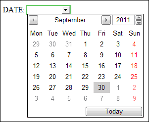
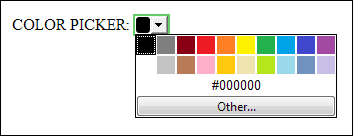

Dates, Times, Color Picker
Dates and Times
You can have a calendar appear when a user clicks inside of a text box. Unfortunately, only the Opera browser does this. Here's what it looks like:

Being able to select a date like this is a terrific innovation that hopefully other browsers will implement in the future. The HTML for the above calendar is this:
<INPUT TYPE="date" value="">
The TYPE is "Date", but you can have other TYPES:
TYPE="Date"
TYPE="Month"
TYPE="Week"
TYPE="Time"
TYPE="Datetime"
TYPE="Datetime-local"
All the other browsers will just show you a blank text box in place of the TYPEs above.
Colour Picker
Another form element you can add is a Colour Picker. This will be of limited use, and only the Opera browser has implement it. The HTML code is this:
<INPUT TYPE="Color">
In the browser, it looks like this:

Again, it will just end up as a plain text box, if a browser doesn't support it.
In the next lesson, you'll learn about HTML 5 data lists.